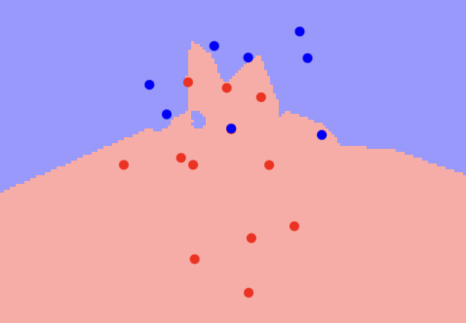

When you hear a new song, you can deduce its genre from the genres of other similar songs you know. Similarly KNN takes a new data point and classifies it by comparing it to the classes of K most similar data.
I have previously given a presentation on how machine learning and AI works where I chose to explain the KNN, K-Nearest-Neighbors, machine learning model. It's an interesting model that derives from the human neurological process of recognition and learning. I used a very simple visualizer I found online with 20 points of 2 classes differentiated by color. Although it did the job, it didn't visualize the true strength of machine learning, which is revealed when applied on large datasets with nuanced associations.
Equipped with new visualization techniques from DSC 106 with Jard Wilber, I will be revisiting KNN and build a visualization on real cryptocurrency historical price data from the past year.